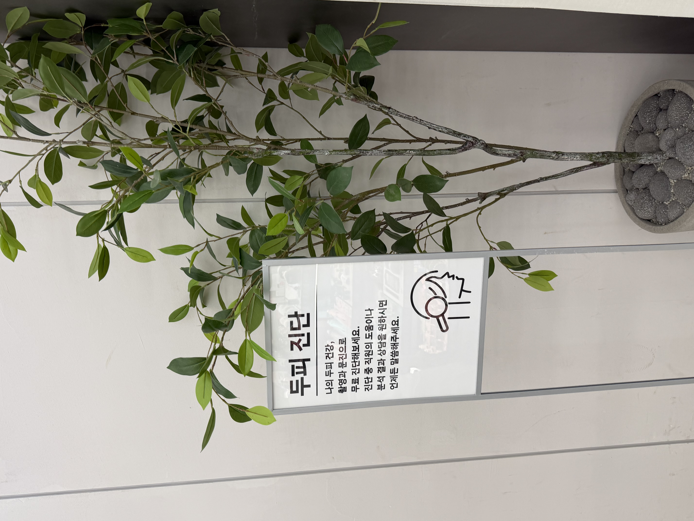
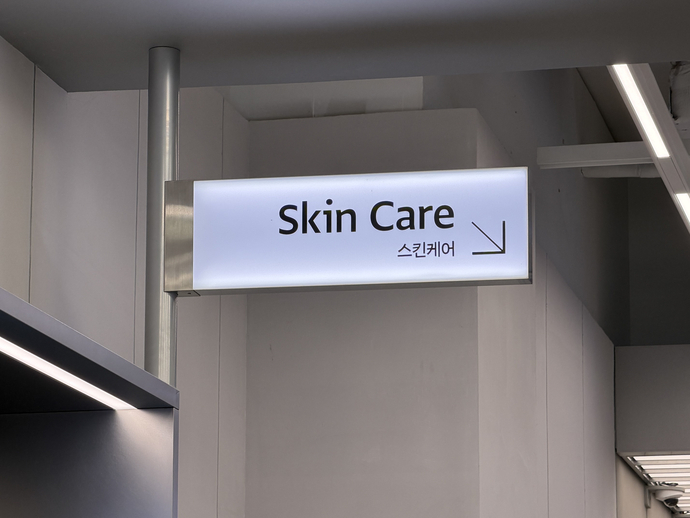
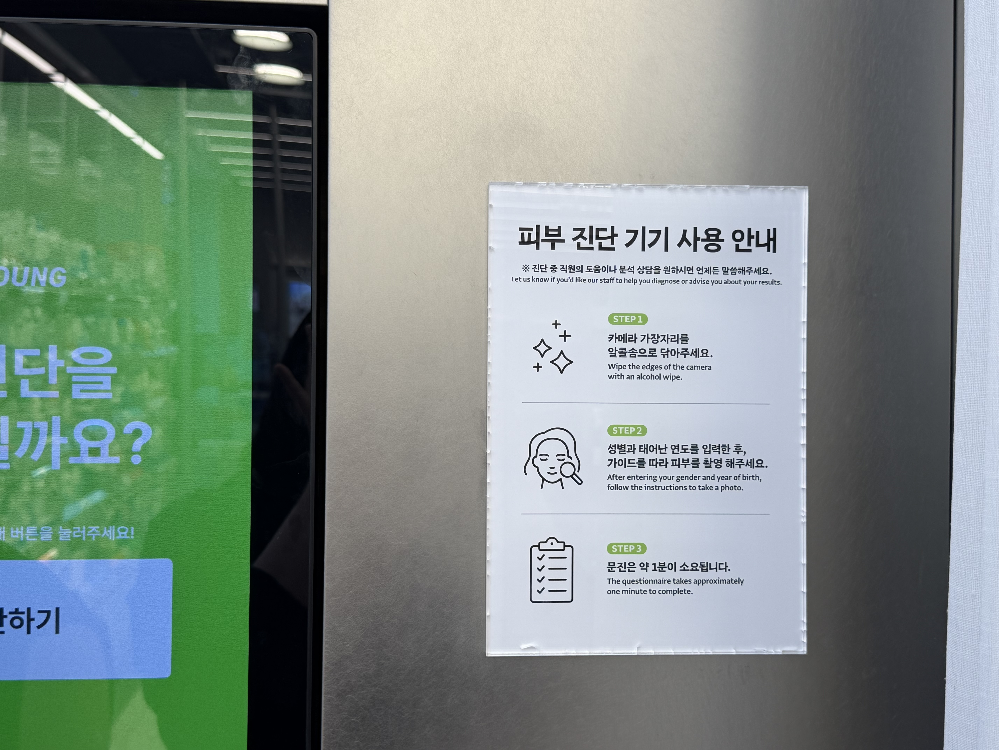
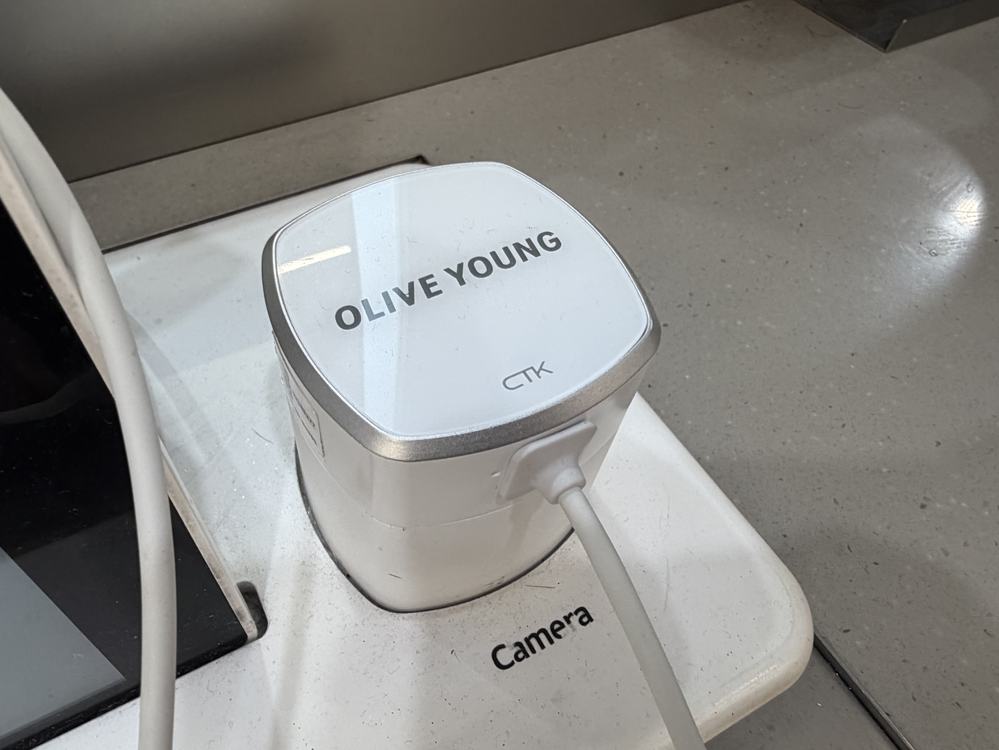
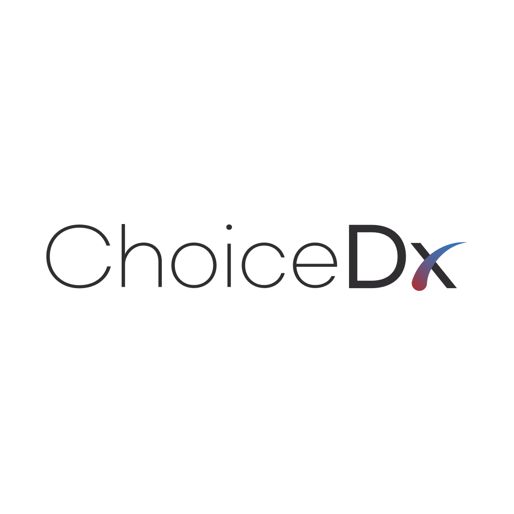
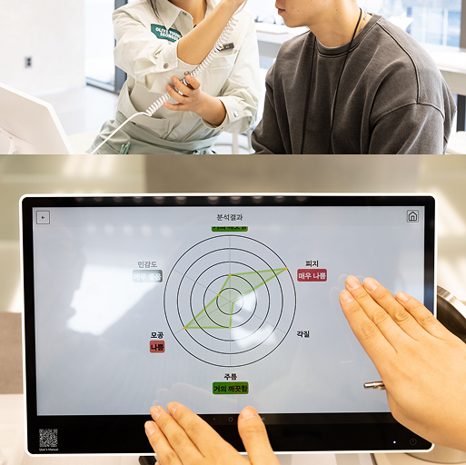

정확한 피부 진단이 중요한 이유
정확한 피부 진단이 중요한 이유는 고객이 자신의 피부 상태를 늘 정확하게 설명하기 어렵기 때문입니다. 고객은 건조함, 유분감, 민감함, 칙칙함, 두피 불편감, 모발 손상감을 일상적인 표현으로 이야기하지만, 상담자는 이를 실제 관리 방향과 제품 추천으로 정리해야 합니다.
AI 피부 분석과 전문 피부 분석기는 상담자를 대체하는 장비가 아닙니다. 상담의 출발점을 더 객관적으로 잡아주는 도구입니다. 이미지 기반 분석은 보이는 지표를 정리하고, 부위별 차이를 보여주며, 고객이 이해하기 쉬운 설명으로 이어지도록 돕습니다.
피부, 두피, 모발 상태는 계절, 생활 습관, 세정 루틴, 스타일링, 자외선, 스트레스, 제품 사용에 따라 계속 달라집니다. 재방문 비교가 가능한 피부 진단 시스템은 일회성 판매보다 지속적인 상담 경험을 만드는 데 적합합니다.
부정확한 진단이 만드는 문제
진단이 부정확하면 리테일 상담의 설득력이 약해집니다. 고객은 자신의 피부 타입을 오해할 수 있고, 상담자는 설명 근거가 부족해질 수 있으며, 제품 추천은 개인화된 제안보다 일반적인 안내처럼 느껴질 수 있습니다.
얼굴 피부만 보는 상담에도 한계가 있습니다. 두피 유분감은 모발 볼륨 인상과 연결될 수 있고, 모발 손상감은 스타일링과 헤어 케어 선택에 영향을 줍니다. 완성도 높은 상담은 피부, 두피, 모발을 함께 살펴야 합니다.
비교 가능한 기록이 없으면 재방문 관리도 어려워집니다. 고객이 다시 방문했을 때 무엇이 달라졌고, 무엇이 유지되었으며, 어떤 루틴을 조정하면 좋을지 설명하려면 데이터 기반 스킨스캔 경험이 필요합니다.
정확한 진단이 실제로 의미하는 것
뷰티테크에서 말하는 정확한 진단은 의학적 진단을 뜻하지 않습니다. 일관된 측정 환경, 피부·두피·모발 이미지 데이터, AI 보조 분석, 상담자가 설명할 수 있는 리포트를 갖춘 전문 뷰티 상담 프로세스를 의미합니다.
피부진단기와 피부 분석 소프트웨어는 역할이 다릅니다. 장비는 이미지 데이터를 수집하고, 소프트웨어는 이를 시각 리포트, 분석 항목, 상담 포인트, 추천 흐름으로 정리합니다.
결과는 상담 현장에서 바로 이해될 수 있어야 합니다. 단순한 숫자보다 현재 상태를 어떻게 설명할지, 어떤 제품군을 고려할지, 다음 방문에서 무엇을 비교할지 안내하는 것이 중요합니다. 이는 의료 진단이나 치료를 대신하지 않습니다.
피부·두피·모발은 함께 보아야 합니다
완성도 높은 뷰티 상담은 얼굴 피부, 두피, 모발을 연결해서 바라봅니다. 고객은 뷰티 컨디션을 하나의 전체적인 인상으로 느끼기 때문에, 각각의 측정값보다 연결된 해석이 상담의 가치를 높입니다.
피부 분석
AI 피부 분석은 톤, 모공, 결, 유분, 건조감, 케어 우선순위 등 보이는 피부 고민을 구조적으로 상담하도록 돕습니다.
두피 분석
AI 두피 분석은 유분, 건조감, 각질, 민감 신호 등 두피 케어 상담에 필요한 시각 자료를 제공합니다.
모발 분석
모발 분석은 윤기, 손상 인상, 밀도감, 스타일링 루틴, 헤어 케어 추천을 상담하는 데 도움을 줍니다.


매장 스킨스캔 경험
좋은 매장 스킨스캔 경험은 고객에게는 간단하고, 상담자에게는 구조적이어야 합니다. 측정, AI 보조 분석, 시각 리포트, 상담, 추천, 재방문 비교가 하나의 흐름으로 이어질 때 매장 상담의 완성도가 높아집니다.



AI가 중요한 이유
AI는 상담의 일관성과 해석을 보조하는 역할을 합니다. 리테일 환경에서는 상담자마다 같은 고객을 다르게 설명할 수 있습니다. AI 피부진단, AI 두피 분석, 모발 분석 소프트웨어는 분석 항목을 표준화하고 결과를 빠르게 시각화하는 데 도움을 줍니다.
AI는 측정 결과를 고객 커뮤니케이션으로 바꾸는 데도 중요합니다. 이미지, 지표, 비교 결과, 쉬운 설명이 함께 제공되면 고객은 자신의 상태를 더 잘 이해합니다. 브랜드는 이 데이터를 맞춤형 화장품 추천, 제품 매칭, CRM, 재방문 상담에 활용할 수 있습니다.
뷰티 브랜드와 리테일러를 위한 가치
H&B 스토어, 뷰티 브랜드 매장, 리테일 팝업, 헬스케어 및 더마 뷰티 브랜드, 두피 케어 브랜드, 헤어 케어 브랜드, B2B 파트너는 진단 데이터를 통해 상담을 더 구체적이고 반복 가능한 경험으로 만들 수 있습니다.
리테일러에게 중요한 가치는 단순한 측정 이벤트가 아닙니다. 데이터를 수집하고, 이해하기 쉽게 설명하고, 제품을 추천하고, 기록을 저장한 뒤 다음 방문에서 비교하는 상담 모델이 더 큰 가치를 만듭니다.


ChoiceDx 관점

ChoiceDx by ChoiceTech Korea는 오프라인 상담 환경에서 피부, 두피, 모발 분석을 지원하는 AI 뷰티테크 진단 시스템입니다. Skin Scan 경험, 매장 상담, B2B 뷰티테크 프로그램, 제품 추천, CRM, 재방문 관리를 위한 구조를 제공합니다.
ChoiceDx의 관점은 실무적이고 신중합니다. 측정은 의료적 주장을 강화하기 위한 것이 아니라, 상담자가 보이는 뷰티 상태를 더 명확하게 설명하도록 돕기 위한 과정입니다.

FAQ
AI 피부진단이란 무엇인가요?
AI 피부진단은 이미지 기반 피부 데이터를 AI 보조 분석으로 정리해, 보이는 피부 상태를 설명하고 제품 추천을 지원하는 뷰티 상담 프로세스입니다.
정확한 피부 진단이 왜 중요한가요?
추측에 의존하는 상담을 줄이고, 상담자가 설명할 수 있는 근거를 마련하며, 맞춤형 스킨케어 추천과 재방문 비교를 더 체계적으로 진행할 수 있기 때문입니다.
피부진단기와 피부 분석 소프트웨어는 어떻게 다른가요?
피부진단기는 이미지나 측정 데이터를 수집하는 장비이고, 피부 분석 소프트웨어는 그 데이터를 리포트, 해석, 상담 흐름, 추천 워크플로로 정리하는 역할을 합니다.
두피 분석은 헤어 케어 상담에 어떻게 도움이 되나요?
두피 유분감, 건조감, 각질, 민감 신호 등을 시각화해 두피와 모발 케어 방향을 더 명확하게 상담할 수 있도록 돕습니다.
피부 진단이 제품 추천을 지원할 수 있나요?
네. 분석 결과를 고객 고민과 매장 제품군에 연결하면 스킨케어, 두피 케어, 헤어 케어 추천을 더 개인화된 방식으로 제안할 수 있습니다.
의료 진단인가요?
아니요. ChoiceDx 가이드북은 뷰티 상담과 제품 추천 지원을 설명합니다. 의료 진단, 치료, 완치를 의미하지 않습니다.
전문 피부 분석기는 어디에서 사용할 수 있나요?
뷰티 브랜드 매장, H&B 리테일, 팝업, 상담 카운터, 두피 케어 공간, 교육장, B2B 뷰티테크 프로그램 등에서 활용할 수 있습니다.
재방문 비교는 고객 경험에 어떤 도움이 되나요?
시간에 따른 변화를 보여주고 루틴 진행 상황을 설명하며, 다음 상담에서 더 적합한 후속 추천을 제공하는 데 도움이 됩니다.